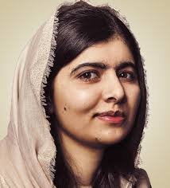

Introduction
Malala Yousafzai is a Pakistani education activist and the youngest
Nobel Prize laureate. She is known for her fight for girls’ education.
Early Life
- Full Name: Malala Yousafzai
- Born: 12 July 1997
- Birthplace: Mingora, Pakistan
- Father: Ziauddin Yousafzai
Education
- Studied in Pakistan and later in the United Kingdom
- Attended University of Oxford
Career
- Spoke out for girls’ education from a young age
- Became an international activist
- Co-founded the Malala Fund
Major Achievements
- Youngest Nobel Peace Prize winner (2014)
- Global advocate for education
- Inspired millions around the world
Challenges
- Faced violence for speaking about education rights
- Continued her mission despite difficulties
Life Today
- Continues to promote education worldwide
- Works through the Malala Fund
Conclusion
Malala Yousafzai is a symbol of courage, education,
and determination for young people everywhere.
⬅ Back